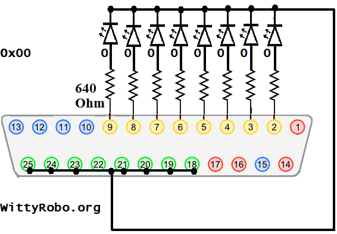

| WR Home Topic Home | Chapter: 1 |
| <Previous | Next> |
Chapter 01
Hello World in the Hardware World !
Page 3
Recalling from previous page:If outportb(0x378, 0xff); is called from a C-program, then all LEDs must glow. As 0xff (1111- 1111 in binary) will set all the pins (Pin2 to Pin9) to Logic_1 or +5V.
Similarly, if outportb(0x378, 0x00); is called from a C-program, then all the LEDs will be off. As 0x00 (0000- 0000 in binary) will clear all the pins (Pin2 to Pin9) to Logic_0 or Ground-voltage or Zero-volt.
Now consider the following code fragments and imagine what will happen to the LEDs:
|  |  |
Line 11 switches ON all the LEDs and
Line 12 switches OFF all the LEDs
Using this program can you see the LEDs Blinking?
The ANS is NO
Why?
The answer is given below :
The computer executes the instructions very fast, so as soon as the LEDs are switched ON, they are switched OFF, this cycle repeats till the program is forcefully terminated. The user can’t visualize the LED’s being blinking.
| WR Home Topic Home | Chapter: 1 |
| <Previous | Next> |